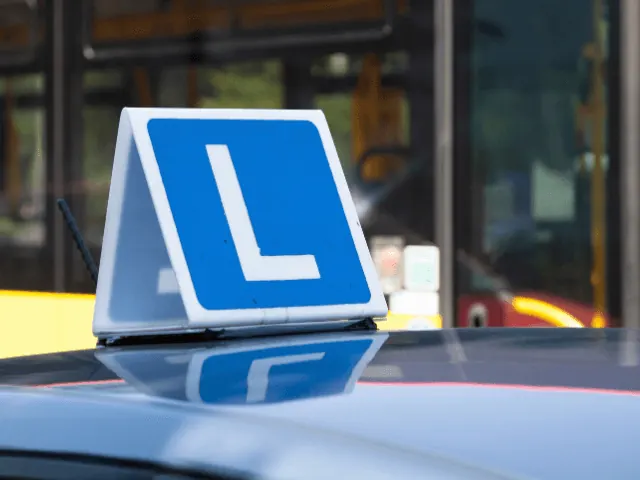
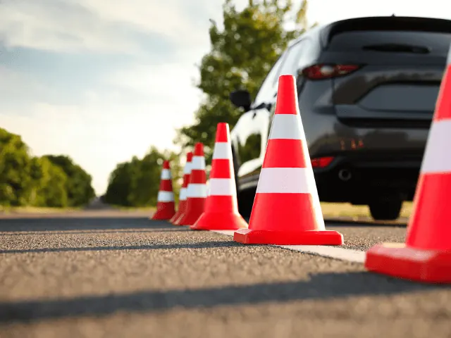

Welke soorten rijbewijzen kun je allemaal halen in Nijmegen?
Gepubliceerd op 12 mei 2023, bijgewerkt op 26 februari 2024

Weet je nog hoe jij je voelde toen je jouw rijbewijs haalde? Of moet je er nog voor gaan? En welk rijbewijs gaat het dan worden? Want er zijn er veel. We nemen je graag mee langs de route, van alle opties die er zijn als het gaat om de rijbewijzen die je kunt halen. Stap in en riemen vast!
Welke soorten rijbewijzen kun je halen?
Je kunt verschillende rijbewijzen halen als je wilt rondrijden op de weg. Het hangt allemaal af van wat je wilt besturen en hoe zwaar het voertuig is. Hieronder een overzichtje:
- Rijbewijs categorie A: Als je op een motorfiets of een driewielig motorrijtuig met onbeperkt vermogen wilt rijden.
- Rijbewijs categorie A1: Voor de lichte motorfietsen met een cilinderinhoud van maximaal 125cc en maximaal 11 kW aan vermogen.
- Rijbewijs categorie B: Als je met een personenauto wilt rijden met een gewicht van maximaal 3.500 kg en waar je maximaal 8 passagiers (inclusief de bestuurder) in kunt vervoeren.
- Rijbewijs categorie BE: Voor als je met een personenauto wilt rijden met een aanhanger waarvan de toegestane maximummassa meer dan 750 kg is.
- Rijbewijs categorie C: Om op een vrachtwagen met een gewicht van meer dan 3.500 kg en maximaal 8 passagiers (inclusief de bestuurder) te kunnen rijden.
- Rijbewijs categorie CE: Als je met een vrachtwagen met een aanhanger wilt rijden waarvan de toegestane maximummassa meer dan 750 kg is.
- Rijbewijs categorie D: Voor als je een bus wilt besturen met meer dan 8 passagiers.
- Rijbewijs categorie DE: Als je met een bus met een aanhanger wilt rijden waarvan de toegestane maximummassa meer dan 750 kg is.
Bedenk wel dat dit overzichtje gebaseerd is op de Nederlandse wetgeving en dat het per land kan verschillen.

Hoe haal je je autorijbewijs?
Nou, dat is nog niet zo makkelijk als het lijkt. Je moet natuurlijk eerst leren autorijden en de regels van de weg leren kennen. Daarvoor moet je naar een rijschool gaan. Een rijschool, die goed bij je past, waar je goede dingen over gehoord hebt en een die je niet kaal plukt, want sommige rijscholen zijn erg prijzig!
Als je denkt dat je genoeg geoefend hebt en klaar bent om het examen af te leggen, moet je naar het CBR. Dat is de instantie die bepaalt of je wel of niet geschikt bent om de weg op te gaan. Het examen dat je daarvoor moet afleggen bestaat uit twee onderdelen: het praktijkexamen en het theorie-examen.
Het praktijkexamen is waar het allemaal om draait. Je moet laten zien dat je veilig en zelfstandig kunt rijden. Dat klinkt makkelijker dan het is, want je moet onderweg allerlei verrichtingen uitvoeren, zoals inparkeren, achteruitrijden en invoegen op de snelweg. En dat alles terwijl je zenuwachtig bent en de examinator op de bijrijdersstoel zit mee te kijken.
Het theorie-examen is minder stressvol, maar daarom niet minder belangrijk. Je moet laten zien dat je de verkeersregels en -borden kent en dat je weet wat je moet doen in verschillende situaties. Dat klinkt simpel, maar er zitten ook lastige vragen tussen waar je echt even over na moet denken.
Als je beide examens hebt gehaald, krijg je je rijbewijs. Gefeliciteerd, je mag nu de weg op! Maar let wel op, de weg kan gevaarlijk zijn en er zijn genoeg idioten op de weg die het er niet makkelijker op maken. Dus blijf alert en rijd veilig!
Wat is het meest bijzondere, moeilijke rijbewijs om te halen?
Het behalen van je rijbewijs ansicht is al een hele prestatie, maar niet elk papiertje haal je even makkelijk. Als we moeten kiezen dan wint vrachtwagenrijbewijs. Dat is het rijbewijs waarmee je zo’n grote, logge, lawaaiige vrachtwagen mag besturen. En dat is geen makkelijke klus.
Je moet niet alleen weten hoe je zo’n ding moet besturen, je moet ook weten hoe je ‘m moet laden en lossen, hoe je ‘m moet onderhouden en hoe je ‘m veilig over de weg moet krijgen. Het vergt veel kennis, kunde en verantwoordelijkheid. Dus als je erover nadenkt om het te halen, weet waar je aan begint en bereid je goed voor. Succes!

Welke rijscholen zijn er in Nijmegen?
In Nijmegen vindt u diverse rijscholen om te beginnen aan uw rijavontuur. Of u nu wilt leren rijden in een auto, op een motor, of achter het stuur van een vrachtwagen wilt kruipen, er is een rijschool die past bij uw behoeften.We hebben voor u een aantal rijscholen op een rij gezet.
Rijschool Tempo
Rijschool Tempo in Nijmegen onderscheidt zich door de persoonlijke en flexibele aanpak van hun rijlessen. Of je nu een beginner bent of je rijvaardigheden wilt verfijnen, hun ervaren instructeurs zorgen ervoor dat elke les op jouw niveau en tempo is afgestemd. Met een hoog slagingspercentage en een breed scala aan rijlessen, biedt Rijschool Tempo kwaliteit en betrouwbaarheid. Bovendien wordt er veel aandacht besteed aan een ontspannen en plezierige leeromgeving, waardoor elke rijles een positieve ervaring is. Kies voor Rijschool Tempo in Nijmegen en maak de weg naar je rijbewijs een aangename rit.
Smits Opleidingen Nijmegen
Smits Opleidingen in Nijmegen staat bekend om hun uitgebreide en kwalitatieve rijopleidingen. Of je nu een auto-, motor-, of vrachtwagenrijbewijs wilt halen, bij Smits Opleidingen krijg je altijd les van ervaren instructeurs die jouw vooruitgang centraal stellen. Ze streven ernaar om je niet alleen te leren rijden, maar ook om je veilig en zelfverzekerd te voelen op de weg. Met flexibele lestijden en een persoonlijke benadering, biedt Smits Opleidingen een rijopleiding die echt op jou is afgestemd. Start je rijavontuur met Smits Opleidingen in Nijmegen en ervaar het zelf.
024Drive Nijmegen
Bij 024drive in Nijmegen krijgt u rijles op maat in een ontspannen en vriendelijke omgeving. Hun professionele instructeurs staan bekend om hun geduld en aanmoediging, waardoor zelfs de meest nerveuze leerlingen zich op hun gemak voelen achter het stuur. Met flexibele lestijden en een op maat gemaakt leerplan, biedt 024drive een rijopleiding die echt bij u past. Bovendien zorgt hun focus op veilig en zelfverzekerd rijden ervoor dat u na het behalen van uw rijbewijs klaar bent voor elke verkeerssituatie. Kies voor 024drive in Nijmegen voor een positieve en effectieve rijervaring.
Rijschool Paul Lam
Rijschool Paul Lam in Nijmegen is een uitstekende keuze voor iedereen die op een zelfverzekerde en veilige manier wil leren rijden. Met hun persoonlijke benadering en geduldige instructeurs, wordt elke les afgestemd op uw individuele leerstijl en tempo. Ze zijn erop gericht om u niet alleen te helpen slagen voor uw rijexamen, maar ook om u de vaardigheden en het vertrouwen te geven die nodig zijn voor een leven lang veilig rijden. Met flexibele lesroosters en een hoog slagingspercentage, maakt Rijschool Paul Lam het leren rijden een aangename en succesvolle ervaring. Ontdek zelf de kwaliteit en toewijding van Rijschool Paul Lam in Nijmegen.
Rijschool Meteor
Rijschool Meteor in Nijmegen is een betrouwbare partner op uw weg naar rijvaardigheid. Met hun brede aanbod aan rijopleidingen en hun toegewijde instructeurs, zetten ze zich volledig in voor uw succes. Ze begrijpen dat iedere leerling uniek is en passen daarom hun lessen aan op uw specifieke behoeften en tempo. Of u nu net begint met rijden of uw vaardigheden wilt aanscherpen, Rijschool Meteor is er om u te begeleiden. Ze bieden flexibele lestijden, een geduldige en ondersteunende leeromgeving, en hebben een indrukwekkend slagingspercentage. Kies voor Rijschool Meteor in Nijmegen en maak van uw rijopleiding een positieve en lonende ervaring.
Zodra voor jou duidelijk is welk rijbewijs je nodig hebt, hebben we goed nieuws! In Nijmegen zijn een heleboel rijscholen, voor elk soort rijbewijs. Heel veel succes bij het maken van deze belangrijke keuze!
OVERZICHT RIJSCHOLEN
BEKIJKRijscholen in Nijmegen
Zin om te beginnen? In onze bedrijvengids vind je alle 14 rijscholen in Nijmegen, met openingstijden, kenmerken en een kaart.
Bekijk alle 14 rijscholen in Nijmegen
Heb je zelf een rijschool? Laat je hier uitlichten.